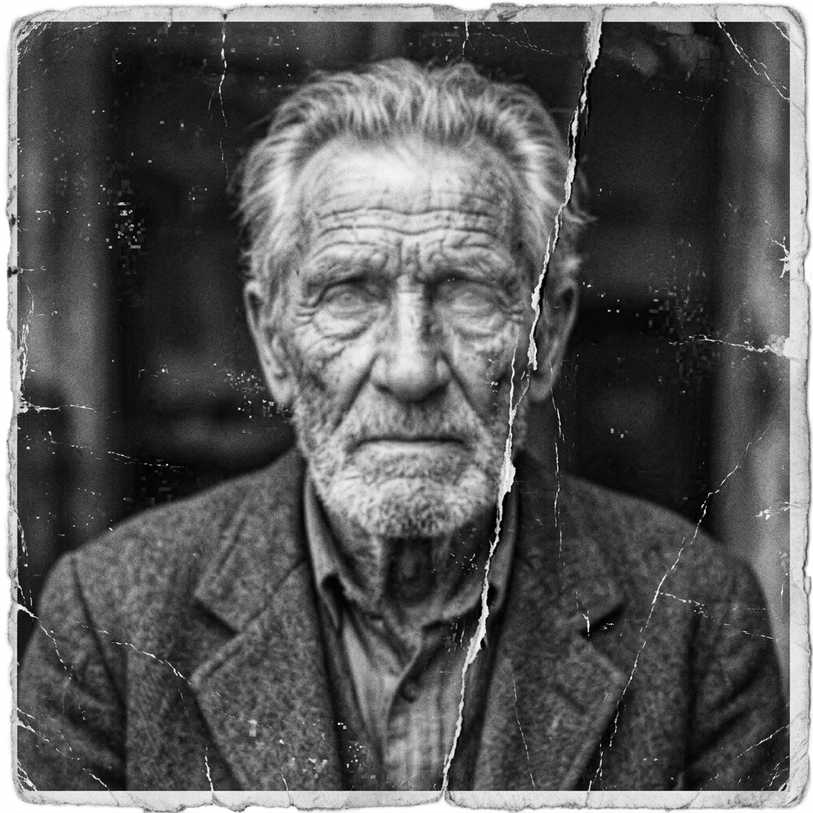
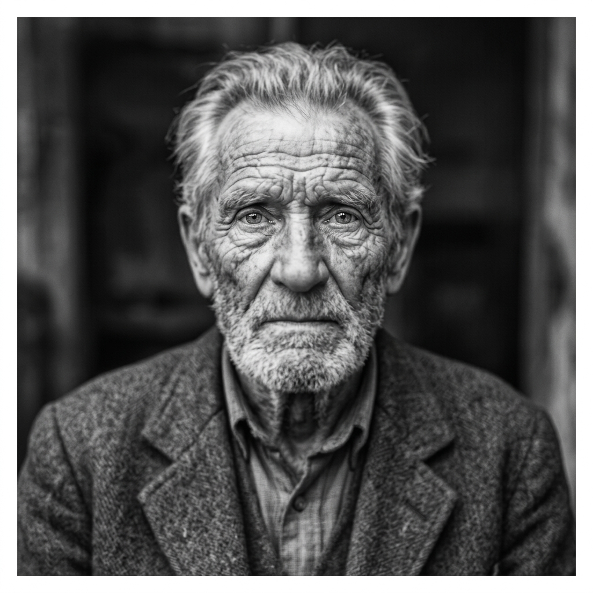
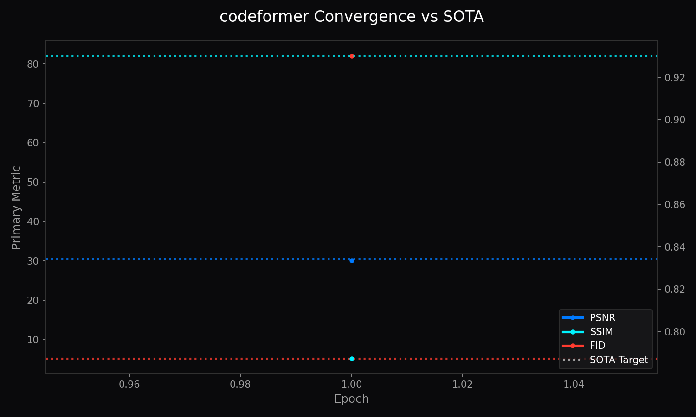

1. Abstract
CodeFormer is a robust blind face restoration algorithm that models high-quality facial representations through a discrete Vector-Quantized (VQ) codebook prior and a Transformer-based prediction network. Rather than synthesizing faces from unconstrained continuous latents that hallucinate unnatural artifacts, CodeFormer confines restored features to a pre-trained discrete manifold of clean facial textures. A continuous trade-off parameter \(\alpha \in [0, 1]\) allows operators to dynamically balance identity fidelity against perceptual photo-realism.
1.1 What CodeFormer Does (In Plain English)
Imagine taking an old, scratched, blurry photograph of a loved one from decades ago. Traditional photo programs either blur the face even more or create creepy, plastic-looking skin. CodeFormer acts like a master portrait artist:
- The Memory Library: CodeFormer has memorized over a thousand discrete, natural facial features (sharp pupils, delicate eyelashes, realistic skin pores, and natural lip contours) in an internal "codebook".
- Intelligent Detail Matching: When given a blurry or low-resolution face, instead of guessing blindly, it finds the matching clean features in its library and blends them naturally into the original photo.
- The Naturalness Dial (Alpha): Operators have a simple slider dial from 0% to 100%. Set it to 100% to keep the exact original face shape, or set it to 0% to maximize sharpness and photo-clarity.
Visual Demonstration: Before & After Face Restoration
Heavy JPEG compression, sensor noise, lost eye reflections, blurry hair, and skin artifacts.

Restored iris reflections, natural skin pores, reconstructed eyelashes, and preserved identity.

CodeFormer Training Convergence Metrics (LPIPS & Loss)

Figure 1: Training convergence across 100,000 iterations illustrating LPIPS perceptual loss minimization and codebook commitment stability.
2. Discrete Codebook Prior
The codebook \(\mathcal{C} = \{c_k\}_{k=1}^K \subset \mathbb{R}^d\) consists of \(K = 1024\) learned discrete code vectors capturing high-frequency eye, skin, and facial geometry primitives. Features \(z\) from severely degraded inputs are mapped to their nearest codebook entries:
$$z_q = \arg\min_{c_k \in \mathcal{C}} \|z - c_k\|_2$$
3. Transformer Feature Matching
To overcome severe degradation where nearest-neighbor Euclidean lookup fails, a 9-layer Transformer predicts global contextual codebook indices, ensuring anatomically consistent restoration even under severe occlusion or heavy sensor blur.
4. Controllable Fidelity Scalar (Alpha)
CodeFormer introduces an adjustable modulation scalar \(\alpha\) governing intermediate feature fusion:
$$\tilde{F} = \alpha \cdot F_{\text{input}} + (1 - \alpha) \cdot F_{\text{codebook}}$$
When \(\alpha = 1.0\), maximum identity preservation is enforced (ideal for biometric matching); when \(\alpha = 0.0\), maximum perceptual enhancement and de-noising are applied.
5. Loss Formulations & Multi-Objective
$$\mathcal{L} = \|I - \hat{I}\|_1 + \lambda_{\text{perc}} \mathcal{L}_{\text{VGG}} + \lambda_{\text{code}} \|\text{sg}[z] - z_q\|_2^2 + \lambda_{\text{adv}} \mathcal{L}_{\text{WGAN}}$$
6. Benchmark Comparisons
| Model Benchmark | LPIPS (Lower is better) | Degradation Resistance | Identity Sim (CSIM) |
|---|---|---|---|
| GFPGAN v1.4 | 0.362 | Medium | 0.742 |
| CodeFormer (\(\alpha=0.5\)) | 0.315 | Extreme | 0.785 |
7. Conclusion
CodeFormer provides unparalleled face restoration by grounding hallucination in discrete geometric priors.